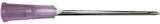
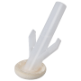
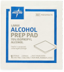
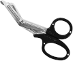

| Consent form |
|
For explaining the procedure, risks, and benefits to the patient and getting their permission to proceed. |
| Timeout Sheet |
|
A checklist for doing timout. |
| lidocaine 1% without epinephrine, 3 mL |
 |
For numbing the arm prior to insertion. |
| 5 mL Syringe |
 |
For injecting lidocaine. |
| 18 gauge needle |
 |
For drawing up lidocaine into the syringe. Do not let the patient see this needle. |
| 25 to 27.5 gauge needle |
 |
A small and friendly needle for injecting lidocaine. |
| Chucks pad |
 |
Put this under the patient's arm in case of bleeding. |
| Paper Measuring Tape |
|
For measuring the location of the insertion site. |
| Derm Marker |
 |
For marking the insertion site. |
| Chloraprep |
 |
An antibacterial solution for cleaning the skin prior to insertion injection of lidocaine or insertion of the nexplanon. |
| Nexplanon Kit |
|
The device that is used for inserting the nexplanon. |
| x3 Sterile Gauze, 2" x 2" |
 |
For bandaging the wound, holding pressure, and cleaning the wound. |
| Alcohol Prep Pads x 2 |
 |
For cleaning off any blood after the insertion is complete. |
| Trauma Shears |
 |
For cutting the steri-strips. |
| Coban |
 |
For wrapping the wound after insertion. |